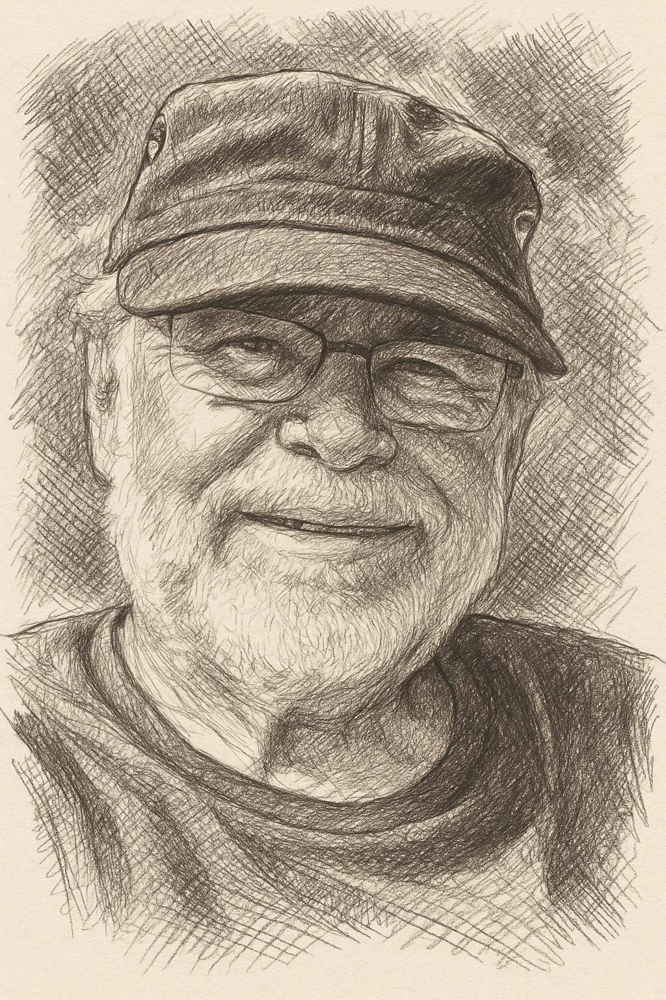
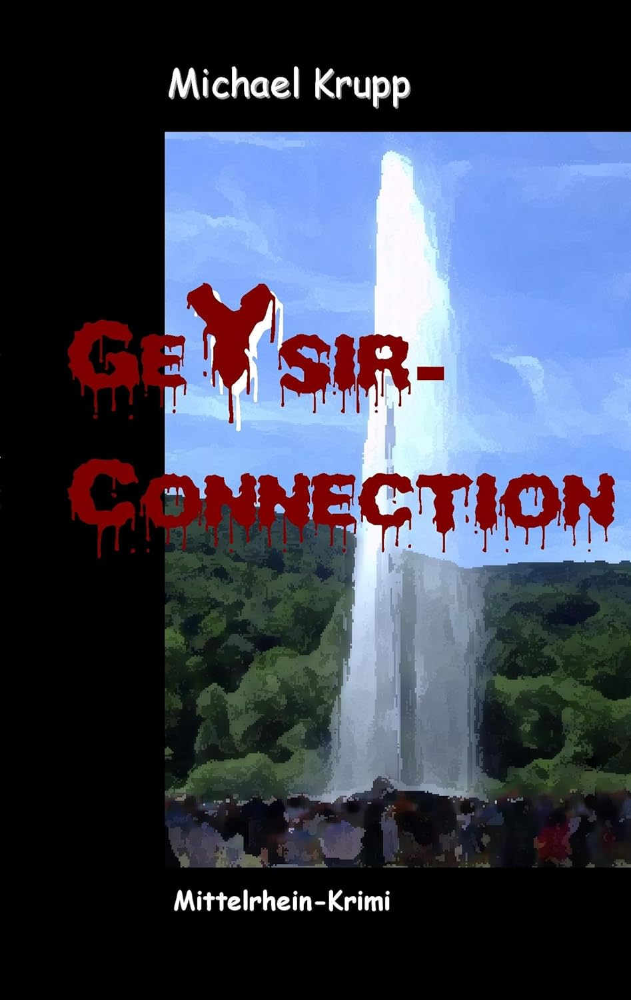

Lieder vom Rhein, Geschichten aus der Heimat
Michael Krupp (MKA)
Musik, Auftritte, Stadtblicke und der Heimat-Krimi Geysir-Connection auf einer lebendigen Bühne im Netz.

Portrait
Stimme, Gitarre, Andernach.
Die Seite verbindet persönliche Lieder mit Orten, die den Klang prägen: Rheinpromenade, Altstadt, Geysir und die kleinen Geschichten zwischen Alltag und Aufbruch.
YouTube
Lieder und Auftritte
Andernacher Lieder als Direktdownload, dazu Platz für YouTube-Links zu Liedern und Auftritten.
Kostenlose MP3s
Andernacher Lieder von Michael Krupp
Die bisher angebotenen Downloads sind hier gesammelt. Jeder Titel öffnet die MP3-Datei in einem neuen Tab.
Schalt' an das Zweite!
Off mäner Bank
Das Hochhauskind
Weil das zum Himmel stinkt
Ditt on Datt off Annenacher Platt
Dann greif ich zu meiner Pfeife
Meine Vaterstadt am Rhein
Jehöchnis
Die Ballade vom Klapperstorch
Döppekooche
Was will ich in Berlin?
Du bist wunderbar
Et Jaraasche-Leed
Schön, dass Du bei mir bist
Fotogalerie
Andernach in eigenen Bildern
Die Flächen sind für eigene Fotos vorbereitet. Bilddateien in img/ ablegen und die Hintergründe in css/style.css austauschen.

Buch
Geysir-Connection
Der alleinerziehende Koblenzer Journalist Moritz Abel fährt mit seiner Tochter zum höchsten Kaltwassergeysir der Welt auf dem Namedyer Werth bei Andernach. Auf dem Schiff lernen sie die Geologin Kirstin kennen, die kurz darauf verschwindet. Als Abel zwei Tage später ihre im Rhein gefundene Leiche identifizieren muss, beginnt er neben den Ermittlungen der Polizei eigene Nachforschungen und gerät in einen gefährlichen Sumpf organisierten Verbrechens.
Ein spannender Mittelrhein-Krimi mit Andernach als zentralem Schauplatz, der lokale Atmosphäre mit überregionaler Handlung verbindet.
Taschenbuch
140 Seiten
BoD, 2011
ISBN 978-3-8423-5922-2
Kontakt
Kontakt aufnehmen
Für Auftritte, Lesungen, Rückfragen zu Liedern oder Bildmaterial direkt per E-Mail Kontakt aufnehmen.